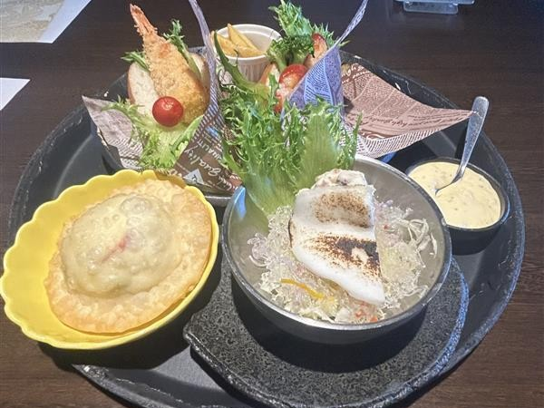

今までの経験
このページでは、高校、専門学校での私の活動を紹介しています。
このページでは、高校、専門学校での私の活動を紹介しています。
 |
生徒会活動：停滞していた校則改定を「行動力」で突破高校2年時、生徒会長として「スマホ使用禁止」の校則見直しに挑みました。 「先生側の不安（指導件数）」と「生徒の要望」の落とし所を模索し、「2か月で指導5件以下なら再検討」という条件を引き出しました。 即座に生徒全員での見回りや放送での啓発活動を指揮。結果、条件をクリアし公約を実現しました。 「相手の懸念を理解し、行動で信頼を勝ち取る」。これが私のリーダーシップの原点です。 |
|---|---|
 |
グループ活動：SNS施策プロジェクトを成功に導いた、全員参加型のリーダーシップ
【挑戦したこと】 「SNSのフォロワーを増やす施策」をテーマに、2か月で意見集約からスライド作成、発表準備まで完遂すること。 |
|  |
アルバイトカフェのバイトとラーメン屋を掛け持ちしております。 左にある写真は、カフェのバイトの賄いです。はんぺいの創作練り物を使った料理があるお店で、私はキッチンとして 働いております。キッチンでバイトする中で、「相手の立場になって考える事」がよりできるようになりました。 新人の方に、業務内容を教えるときに、相手がどこまで理解しているのか、今から何をしようとして分からずにいるのかを考え、サポートしてきました。 その結果、入って６カ月になる子が、一人で仕事を完璧に遂行できるようになり、自身の指導に自信を持ちました。 |
 |
ITスキル：継続的な学習による資格取得と、実務を見据えた開発スキルの習得私は、MOS Associateと基本情報技術者試験を専門学校での勉強を通じて取得しました。 基本情報技術者試験は、3回受験をし、2回不合格となりましたが、めげずに勉強を続け、3回目で合格する事が叶いました。 MOSは、実際の作業を通じて知識を身につけていきました。真っ新な所から、文書を書くという授業もあり、実務でも使える パソコンスキルを持っていると思います。また、専門学校では、プログラミングを学んでいます。 言語は、HTML,CSS,JavaScriptです。一年生では、フロントエンドを、二年生ではバックエンドの言語を学んでいきます。 一年生では、Webクリエイター能力試験を受験し、合格しました。自分で考えた事をコードに起こすという工程を通して、プログラミングを することが手強くなくなりました。 |